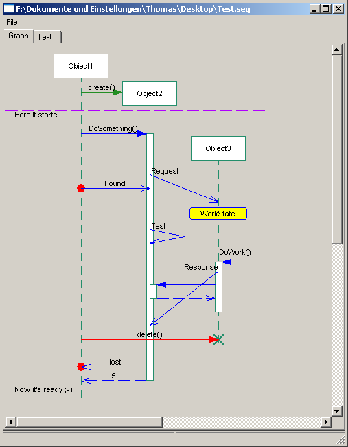
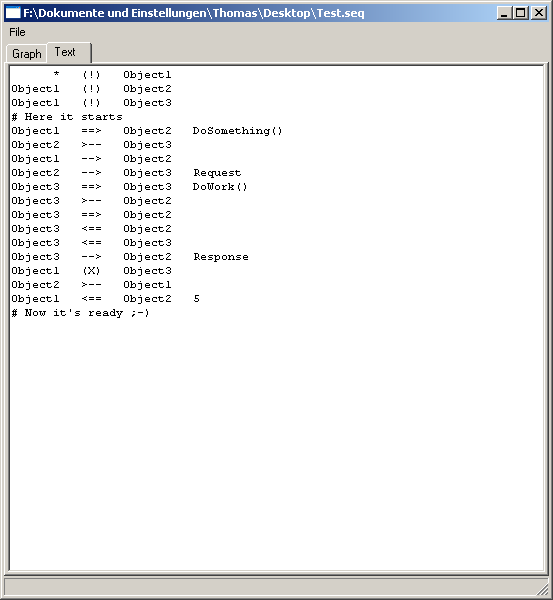

This project shall develop an application, which can convert a trace file in text format to sequence diagrams. The application can also modify the diagrams and save in the same format.
The tool will be needed, for the Project Astade, it should be useful for Programmers of other projects, too.
It shall be written with the Astade tool! Try it, you can download here: http://trace2uml.tigris.org/servlets/ProjectDocumentList?folderID=6208


| Symbol | description |
|
# |
Lines starting with '#' are treated as comment. They are drawn with a vertical line. |
| ! | this is used to notify the existence of an object (the creation is not in the scope of the trace). This is automatically inserted, when you use object names not mentioned before. |
| (!) | this is used to notify an Object creation. |
| -X- | this is used to notify an Object delete. |
| >-- | this is used to notify an asynchronous message send. |
| --> | this is used to notify an asynchronous message receive. |
| >-> | this is a shortcut when typing traces by hand. Creates both, a message send and an immediate receive. |
| ==> | this is used to notify a synchronous function call. |
| <== | this is used to notify a synchronous function return. |
| >>> | this is used to notify a state change. Only useful when reading the Trace for debugging purpose, no influence for the diagrams. |
| [...] | Everything set into square brackets is treated as user data. It stays in the trace line without having any effect to the graphic. You might use it for timestamps or remarks. |
The forbear of that tool is UMLGraph from Diomidis Spinellis.